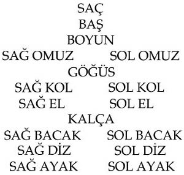
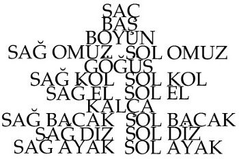

Her zaman olduğu gibi bir gece önceden hazırladığım mektupları göndermek üzere postaneye gidiyordum. Bu kez farklı olarak, adıma gönderilen ufak bir miktar parayı da almam gerekiyordu. Yolda yürürken önemli/önemsiz, uzun/kısa, komik/trajik pek çok şey düşündüysem de, postaneye vardığımda aklımda yalnızca şu vardı: insan bedeni nasıl da ayrılmaz bir bütün. Bu düşüncenin zihnimi tam olarak yürüyüşümün hangi noktasında meşgul ettiğini belirleyebilmek için dayanılmaz bir istek duyuyordum duymasına fakat son zamanlarda nefes alıp vermeye karşı takındığım umarsız tavır buna engel oluyordu. Bu düşünce ne anlama geliyor olabilirdi? Bedenimi baştan ayağa hızlıca gözlerimin önüne getirdim:

Son zamanlarda bunu sık sık yapıyordum. İçinde bulunduğum anı, yaşamakta olduklarımı deneyimleyen bedenimi, gördüklerimi işleyip belleğimin kuytu köşelerine depolayan beynimi belli aralıklarla düşünmem gerektiğini hissediyordum. Nefes aldığım, az da olsa rahatladığım anlardı bunlar. Fazla bir şeye gereksinim duymuyordum böyle anlarda. Nerede olduğumun ya da ne yaptığımın da önemi yoktu. Örneğin bunu daha geçen gün bindiğim belediye otobüsünde yapmıştım. İneceğim durağı kaçırıp son durakta şoförün öldüğümü sanıp ısrarlı bir şekilde sarsalamasıyla gözlerimi beklediğimden önce açmak keyfimi kaçırmıştı fakat bu gibi beklenmedik aksiliklerle karşılaşmaya alışkın olduğumdan her zamanki sakin tavrımla ayağa kalkıp şoförün saydırdığı ağız dolusu küfre aldırış etmeden otobüsten inmiştim. İçsel bir rahatlama yaşadığımı, zamanın bir adım ötesine geçebildiğimi düşündüren aydınlanma anları olarak görüyordum bu yaşadıklarımı. Özellikle uzun süreler dışarıda kalmam gerektiğinde üzerime çullanan imge sağanağının altında ezilip büzülen bedenimin biraz olsun rahatlayıp kendine gelebilmesini sağlamak için önemliydi bu aydınlanma anları. Postanenin giriş katında, danışmanın hemen önündeki banka oturup gözlerimi sımsıkı yumdum. Dur durak bilmeden dört bir yandan üzerime çullanan şeylerin bedenimi ne hale getirmeye çalıştığını düşündüm. Şöyle bir şeydi düşündüğüm:

Gülümsedim. Eciş bücüş bir hal almak istemiyordum. Farkındalığım ve yapmam gerekenleri olağanüstü bir titizlikle uygulamam konusundaki ısrarcı tutumumdan ötürü kendimi kutladım. Sımsıkı yumduğum gözlerim acımaya başlayıp da beyaz ışık çakmalarından başkaca bir şey göremeyince gözlerimi açtım. Karşımda sıkıcı mı sıkıcı, asık suratlı bir devekuşu vardı. Bunu da çok sık yapıyordum. Gerçeklikle başa çıkmak adına geliştirdiğim yöntemlerden biri de karşılaştığım kişileri olduklarından bambaşka biçimlerde hayal etmekti. Devekuşu –asıl adı Hatice, on yıldır postanede gişe memuresi olarak çalışıyor, yapay sarışın, evli, iki çocuk annesi– başını, içine gömdüğü evrak yığınından kaldırıp donuk gözlerle bana baktı. Beni sevmiyor, diye düşündüm; Benden hoşlanmıyor, diye düşündüm sonra; Beni tasvip etmiyor, diye düşünürken ayağa kalkıp devekuşuna doğru birkaç adım attım. Upuzun boynunu evrakların içinden rahatça çıkarabilmesi için tasarlanmış, tavandan sarkan makara sistemini fark ettim. Tuhaf, diye düşündüm. Bunca zamandır böyle bir düzeneğe rastlamamış olmamı yadırgadım. Oysa her hafta düzenli olarak mektup göndermek üzere postaneye geliyordum. Gözlerimi kısıp düzeneği bu kez dikkatlice inceledim. Devekuşunun sol kanadının hemen yanında, gagasını sokup kendine doğru çekerek hareket ettirebileceği, sağlam bir iple makara sistemine bağlanmış plastik bir halka vardı. Tüm gücünü kullanarak bu halkayı çektiğinde devreye giren makara düzeneği, üzerine kalın bir cam parçası yerleştirilmiş eski tip masayla gün içinde neredeyse yekvücut halini alan devekuşunun boynunu yavaş yavaş yukarı kaldırmak suretiyle ona kabuklu yemiş vermek üzere neşe içinde ellerini çırpan insanla yüzleşmesini sağlıyordu. Devekuşu bu edim için epey güç sarf ettiğinden zamansız yineleme gereksinimlerinden hoşlanmıyor, böyle bir durumla karşılaştığında, kendisinden beklenmeyecek denli saldırgan tepkiler verip tıslayarak kanatlarını çırpabiliyordu. Hatice Hanım uzattığı mektuplarla birlikte evrakları da alıp dikkatle inceledikten sonra umarsız bir yüz ifadesiyle masanın üzerine bırakıp hemen arkasındaki koltuğu işaret ederek beklememi istedi. Mektuplar geldi. Mektuplar gitti. Açılıp kapanan kapılar, havada uçuşan devekuşu tüyleri, belli aralıklarla devreye giren makaranın tıkırtıları... Zaman bir şekilde geçiyordu. Bulunduğum yer her neresi olursa olsun bir süre sonra oraya –geçici de olsa– alışıp insanlarla eşyaları oldukları halleriyle görüp değerlendirebiliyordum. Makara düzeneğinin olduğu yerde tavandan upuzun bir lambanın sarktığını, devekuşunun iki büklüm sığıştığı yüksek arkalıklı koltuktaysa Hatice Hanım’ın oturuyor olduğunu şimdi çok daha açık bir şekilde görebiliyordum. Göremesem de bir şey değişmezdi zaten. Alışmıştım artık. Bir devekuşuyla da pekâlâ mantıklı bir iletişim kurulabileceğini düşünebiliyordum sözgelimi. Hatice Hanım’ın el kol etmesiyle birlikte kalkıp yanına gittim. Devekuşu uzun, pütürlü dilini çıkarıp önce sağ kanadını yalıyor, ardından sol kanadıyla eğreti bir şekilde tuttuğu renkli kâğıtları birbirlerinden tek tek ayırıp masanın üzerine bırakıyordu. Para, dedi Hatice Hanım devekuşu gözlerini belerterek. Para. Renkli kâğıtlara uzanıp aldım. Birbirine sürttükçe dişlerimi kamaştıran hışırtılar çıkaran bu renkli kâğıtların birkaçını komşu denen birtakım insanlara vereceğimi düşündüm. Hayati ihtiyaçlarım dışında neredeyse hiçbir şey satın almadığımdan bu renkli kâğıtlarla olan ilişkim sınırlıydı. Gelgelelim çok istememe karşın bir türlü onlardan tam anlamıyla kurtulamıyordum. Postaneden çıkarken hayatımdan –bir daha asla ihtiyaç duymamacasına– neleri çıkarabileceğim sorusu düştü aklıma. Zihnimde hemen bir liste oluşturdum:
1. Plastik leğen
2. Tahin helvası
3. Yün eldiven
4. Duvar çivisi
5. Kişisel bakım seti
Bu liste uzadıkça kendimi daha iyi hissediyordum. İhtiyaç duymadığım bunca şey olduğuna göre yalnızca gerçekten ihtiyaç duyduğum şeyleri satın alarak uzunca bir süre idare edebilirdim. Hem zaten bir şeyler satın almayalı epey zaman olmuştu. Yanılmıyorsam en son iki ay önce ataç almak üzere kırtasiyeye gitmiş, aldığım kutunun içinden çıkan bin tane atacı birbirine tutturarak ataçyılan adını verdiğim ilk –ve son– evsel hayvanı vücuda getirmiştim. Yeme içme derdi olmayan ataçyılanın tek ihtiyacı her iki saatte bir bulunduğu yerden alınıp evin bir başka odasındaki yeni durağına bırakılmaktı. Örneğin evden çıkarken ataçyılanı salondaki üçlü koltuğun üzerine yerleştirmiştim. Her sabah yataktan çıkmadan önce başucumdaki ajandaya nuralandırarak not ettiğim durak listesi aynı zamanda ataçyılanın ne tür bir şekle sahip olacağını da belirliyordu. Üçlü koltuğun kadifemsi ferahlığını uçsuz bucaksız bir ova gibi kullanarak gövdesini uzattıkça uzatırken, klozet kapağının tehlikeli kayganlığına kapılmaması için iki parmağının arasına aldığım baş kısmını saat yönünün tersine çevirerek onu dertop ediyordum. İşte şimdi, postaneden eve dönüş yolunda bir yandan yerdeki yaprakları, yaprakların renk ve damarlarını incelerken öte yandan ataçyılan için bir sonraki durağın mutfak bankosu olduğunu düşünüyordum. Ataçyılan için en zorlu yer burasıydı. Bir kere uzunluğundan dolayı bankoya sığmıyordu. Aşağı sarkan bölümünün yarattığı ağırlıkla yere düşmemesi için gövdesinin bankoda kalan kısmının üzerine tabak, çanak yahut kitap gibi herhangi bir nesne yerleştirmesi gerekiyordu. Son günlerde ataçyılanın epey vaktimi almasından hoşnut değildim. Bu durum gün içinde mektup yazmaya, yemek yapmaya, pencerenin önüne çektiğim televizyon koltuğuna oturup gelip geçeni izlemeye ya da hiçbir şey yapmadan öylece oturmaya daha az vakit ayırmam gerektiği anlamına geliyordu. En sevdiğim de buydu: yani hiçbir şey yapmadan öylece oturmak. Nerede olduğumun, yahut ne yaptığımın önemi olmazdı. Ataletin çağrısını duyduğumda, her ne yapıyorsam yarıda bırakıp bulunduğum yere oturuverirdim. Çevremdeki insanlar anlamsız olduğunu düşündükleri bu davranış karşısında seslerini yükseltip tepki gösterdiklerinde onlara Yapacak daha başka bir şey var mı? diye yanıt verirdim. Haklıydım da. Aslında haklı olduğumu biliyor olmalıydılar. Ne de olsa inanılan, değer verilen, hayatın asıl anlamı olduğu düşünülen bir duygu ya da düşünce, başkalarınca ne kadar az biliniyorsa, bunu o an düşünen kimse için bir o kadar kıymetliydi. Hayatın, pazara gitmenin, soba kurmanın, odun-kömür almanın, yemek yapmanın, yapılan yemek yendikten sonra dişlerin arasına kaçan yemek parçalarının kürdanla çıkarılmasının asıl anlamını keşfetmeye doğru önemli bir adım atıldığına dair bir bilinç halinin oluşması, yaşanılan bu aydınlanma an(lar)ına dair ötekilerin en ufak bir fikri olmadığında değer kazanıyordu. Bu düşüncemi daha geçen hafta karşı komşum Avni Bey’i bir süre takip ederek zihnimde iyice belirginleştirmiştim. Olaylar aslında beklenmedik bir şekilde gelişmişti.
Çoğu zaman yaptığım gibi pencere kenarındaki televizyon koltuğuna oturmuş, buzdolabı motorundan çıkan hırıltıyı andıran seslerde bir anlam ararken karşı dairenin kapısının açıldığını duyup kapının gözetleme deliğinden bakınca, Avni Bey’in dairesinden kamburlaşmış bedenini güçlükle ayakta tutabildiği halde pazar sepetini çeke çeke merdivene doğru ilerleyen horoz başlı yaşlı bir adam çıktığını gördüm. Bu gayet olağan bir durumdu. Ne de olsa Avni Bey her hafta çarşamba günü mutlaka pazar alışverişi yapardı. Oysa bilinçaltımın Avni Bey’e bir horoz başı yakıştırmış olması yeni bir durumdu. Ne yapacağımı şaşırmış bir halde öylece kapıya yaslanıp bir süre derin derin soluk alıp verdikten sonra vakit kaybetmeden ceketimi alıp dışarı çıktım. Güneşli havanın tadını çıkarırcasına ağır adımlarla kaldırım boyunca ilerleyen Avni Bey’e yetişmem uzun sürmedi. Ellerimi ceketimin ceplerine sokup ona fark ettirmemeye çalışarak pazara varana dek birkaç adım gerisinden yürüdüm. Yol boyunca, kimsenin görmediği bir şey görmeye çalışırmışçasına kaldırıma bakıyordum çünkü başımı ne zaman kaldırsam gözlerim, Avni Bey’in attığı her adımla birlikte sağa sola sallanan ibibiğine takılıyordu. Bunu görmeye dayanamıyordum. Ara sıra yanımızdan geçen insanların yüzlerine bakarak tuhaf olanın ne olduğunu düşünüyordum: kimsenin gördüklerimi görmemesi mi yoksa herkes aynı şeyi gördüğü halde ben bunun farkında olmadığımdan kendimi bu denli ayrıksı hissetmem mi? Bu düşünce, aynı gün pazarda Avni Bey’in peşi sıra ilerlerken yaşayacağım aydınlanmanın ilk adımını oluşturuyordu. Karşı komşumun başının yerinde bir horoz başı gördüğüm için herkesten farklı, ayrıksı bir birey olduğumu düşünürken, aslında başkalarının da aynı şeyi görüp bana bunu fark ettirmiyor olma ihtimallerinin var oluşu her şeyi geri dönüşsüz bir biçimde değiştiriyordu. İbibik rüzgârda hafif hafif sallandıkça midem bulanıyor, zihnime aynı anda üşüşen onlarca düşünce gözlerimin kararıp başımın dönmesine neden oluyordu. Bu kadar zor mu olmalı, diye düşündüm pazara iyice yaklaşmışken; gelgelelim tam olarak neden bahsettiğim yahut bahsettiğim şeyin zorluğunun neden kaynaklandığı hakkında bir fikrim yoktu. Avni Bey dünya yüzeyinde mağrur duruşunu bozabilecek hiçbir şey olmadığına inanarak atıyordu adımlarını, öyle ki onu gören sebze pazarına değil de, yüce değerler uğruna kanının son damlasına kadar çarpışacağı bir savaş alanına gittiğini düşünebilirdi. Avni Bey’in peşi sıra pazara girer girmez karşı karşıya geldiğim renk/koku/ses/görüntü sağanağının altında bedenimin ezilip büzülmeye başladığını hissediyordum. Derin bir soluk alıp kalabalığın arasında Avni Bey’i gözden kaybetmemeye çabalayarak yürümeye devam ettim. Dört bir yanımı çevreleyen bunca insanın arasında ilerlemek ustalık istiyordu. Başımı kaldırıp gözlerimle Avni Bey’i aradım. İşte! İbibik oradaydı! Kereviz tezgâhının önünde dimdik duruyordu. Omzuma, kollarıma, bacaklarıma çarpan insanlara aldırış etmeden yürüyüp kereviz tezgâhının hemen yanında durdum. Avni Bey gagasını kerevizlere daldırıp çıkararak en taze olanını belirlemeye çalışıyordu. Bu işlemin bitmesini beklerken kollarımı kavuşturup çevrede olup bitenleri izlemeye başladım. Tezgâhın arkasında duran kereviz satıcısıyla göz göze geldik. Gülümseyerek tezgâhtaki kerevizlerden birini alıp burnumun ucuna kadar uzattı. Kereviz, dedi suratıma bakarak. Kereviz. Terlemeye başlamıştım. Avni Bey gagasını daldırıp çıkardığı kerevizlerden birini alıp parasını ödeyerek kalabalığa karışmıştı bile. Oysa ben büyülenmiş gibi satıcının bana uzattığı kerevize bakıyordum. Kokusu, rengi, saplarındaki su damlalarından yansıyan güneş... Ah, katıksız gerçeklikteki şaşırtıcı yücelik! Satıcıyı görmüyordum bile. Artık benim için yalnızca havada asılı duran taze bir kereviz vardı. Her şey üstüme üstüme gelmeye başlamıştı. İnsanlar vücudumu olur olmaz yerlerden sıkıştırıyor, gözümün önünde sallanıp duran kereviz ise aklımı başımdan alıyordu. Güçlükle başımı çevirip sağa sola baktım. Avni Bey’in ibibiği gözden kaybolmuştu. Kim bilir, belki de onu sonsuza dek yitirmiştim. Ne de olsa Avni Bey’i bir daha aynı ibibikle görme şansım olmayabilirdi. Kereviz, diye bağırdı pazarcı bir kez daha. Kerevizin yaydığı ışık gözlerimi alıyordu. Bu pastel sarılığın ardındaysa tamtamlarınkinden farksız sesiyle konuşup duran pazarcının dudaklarının arasından çıkıp usulca göğe yükselen renksiz hece baloncukları vardı. Bu hecelerle oluşturulabilecek diğer sesleri çıkarmaya çabaladım:
Viz-Re-Ke
Re-Viz-Ke
Ke-Viz-Re
Olmuyordu. Pazarcının güldükçe takırdayan dişlerinin karşısında küçük düşmeyi dahi göze alarak tekrarladığım bu heceler ancak ve ancak Ke-Re-Viz olarak şekillendiğinde bir anlam ifade ediyordu. Etrafıma baktım. Bu her şey için böyleydi. Kollar, bacaklar, eller, omuzlar ancak belli bir şekilde birleştiğinde bir insan vücuda geliyordu. Tezgâhlardaki maydanozlar, turplar, havuçlar için de durum farksızdı. İşte o an yaşadığım aydınlanma ter içinde kalmama neden oldu. Demek heceler yalnız ve yalnız birbirimize aynı şeyden bahsettiğimizden emin olmak için uydurduğumuz ses öbeklerinden ibaretti. Bu da demek oluyordu ki omuzlarının üzerinde horoz başı taşıyan Veli Bey aslında bambaşka –ve şu an kestiremediğim– bir hece öbeğiydi. Çevremdeki diğer insanların benimle aynı anda aynı şeyi görüp görmemeleri, yalnızca bakılan nesneye o an hangi ses öbeğini uygun bulduklarıyla ilişkiliydi. Ter içinde kalmıştım. Koşmaya başladığımda pazarcı arkamdan kahkahalarla gülüyordu.